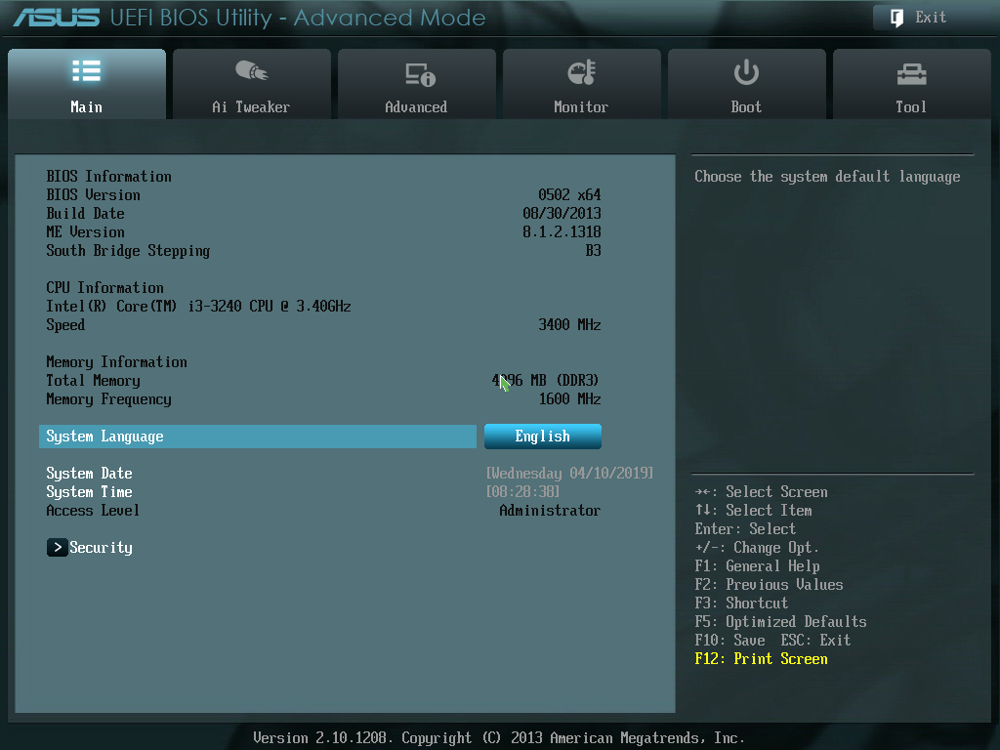

I. Teori Dasar
| Spesifikasi BIOS pada Komputer LAB |
|---|
| H61M-C |
| BIOS Verion : 0502 |
| CPU Type : Intel(R) Core(TM) i3-3240 CPU @ 3.40GHz |
| Total Memory : 4096 MB (DDR3 1600MHz) |
BIOS, singkatan dari Basic Input Output System, dalam sistem komputer IBM PC atau kompatibelnya (komputer yang berbasis keluarga prosesor Intel x86) merujuk kepada kumpulan rutin perangkat lunak yang mampu melakukan hal-hal berikut:
- Inisialisasi (penyalaan) serta pengujian terhadap perangkat keras (dalam proses yang disebut dengan Power On Self Test, POST)
- Memuat dan menjalankan sistem operasi
- Mengatur beberapa konfigurasi dasar dalam komputer (tanggal, waktu, konfigurasi media penyimpanan, konfigurasi proses booting, kinerja, serta kestabilan komputer)
- Membantu sistem operasi dan aplikasi dalam proses pengaturan perangkat keras dengan menggunakan BIOS Runtime Services.
BIOS menyediakan antarmuka komunikasi tingkat rendah, dan dapat mengendalikan banyak jenis perangkat keras (seperti keyboard). Karena kedekatannya dengan perangkat keras, BIOS umumnya dibuat dengan menggunakan bahasa rakitan (assembly) yang digunakan oleh mesin yang bersangkutan.
Istilah BIOS pertama kali muncul dalam sistem operasi CP/M, yang merupakan bagian dari CP/M yang dimuat pada saat proses booting dimulai yang berhadapan secara langsung dengan perangkat keras (beberapa mesin yang menjalankan CP/M memiliki boot loader sederhana dalam ROM). Kebanyakan versi DOS memiliki sebuah berkas yang disebut "IBMBIO.COM" (IBM PC-DOS) atau "IO.SYS" (MS-DOS) yang berfungsi sama seperti halnya CP/M disk BIOS.
Pada Motherboard ASUS H61M-C, memiliki 2 mode, yaitu :
-
EZ Mode
Adalah pengaturan yang penting-penting saja akan ditampilkan pada BIOS
-
Advanced Mode
Adalah pengaturan yang Advanced atau lebih dari sekedar pengaturan yang ada pada EZ Mode, pengaturannya disarankan hanya untuk para pengguna yang ahli untuk mengatur BIOS pada komputer
Pada Advanced Mode terdapat bagian-bagian seperti :
{kind=link}
{kind=link}
II. Alat dan Bahan
- 1 Unit PC
III. Langkah Kerja
Masuk kedalam BIOS
Jika anda hendak melakukan instalasi Sistem Operasi, baik itu Windows, Linux, atau OS lainnya maka anda tentu harus masuk ke BIOS atau UEFI Settings terlebih dahulu. Anda bisa melihat daftar berikut untuk mengetahui tombol khusus apa yang harus anda gunakan/tekan sebagai cara masuk BIOS Laptop tersebut. Tentu saja anda harus menyesuaikan merk dan tipe laptop yang anda gunakan sesuai dengan yang terdapat pada daftar.
| Merk Laptop | Tipe Laptop | Tombol |
|---|---|---|
| ACER | Aspire, Predator, Spin, Swift, Extensa, Ferrari, Power, Altos, TravelMate | Del atau F2 |
| ASUS | A-Series | Del |
| ASUS | B-Series, ROG-Series, Q-Series, VivoBook, Zen AiO, ZenBook | F2 atau ESC |
| COMPAQ | Presario, Prolinea, Deskpro, Systempro, Portable | F10 |
| DELL | XPS, Dimension, Inspiron, Latitude, OptiPlex, Precision, Alienware, Vostro | F2 |
| HP | EliteBook, ProBook, Pro, OMEN, ENVY, TouchSmart, Vectra, OmniBook, Tablet, Stream, ZBook | Esc, F10 atau F11 |
| HP PAVILLION | Pavillion | F1 |
| LENOVO | ThinkPad, IdeaPad, Yoga, Legion, 3000 Series, N Series, ThinkCentre, ThinkStation | F1 atau F2 |
| SAMSUNG | Odyssey, Notebook 5/7/9, ArtPC PULSE, Series ‘x’ laptops | F2 |
| SAMSUNG ULTRABOOK | Ultrabook | F10 |
| SONY | PCG-Series, VGN-Series | F1, F2, atau F3 |
| SONY VAIO | VAIO | ASSIST |
| TOSHIBA | Portégé, Satellite, Tecra, Equium | F1 atau Esc |
| TOSHIBA EQUIUM | Equium | F12 |
IV. Hasil
-
V. Kesimpulan
BIOS menyediakan antarmuka komunikasi tingkat rendah, dan dapat mengendalikan banyak jenis perangkat keras (seperti keyboard). Karena kedekatannya dengan perangkat keras, BIOS umumnya dibuat dengan menggunakan bahasa rakitan (assembly) yang digunakan oleh mesin yang bersangkutan.
VI. Referensi
Zukron Alviandy Rahmadhan